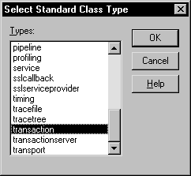
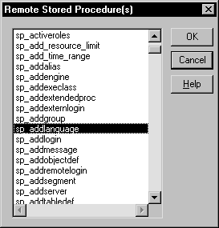
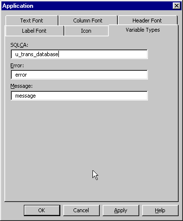

SQLCA is a built-in global variable of type transaction that is used in all PowerBuilder applications. In your application, you can define a specialized version of SQLCA that performs certain processing or calculations on your data.
If your database supports stored procedures, you might already have defined remote stored procedures to perform these operations. You can use the remote procedure call (RPC) technique to define a customized version of the Transaction object that calls these database stored procedures in your application.
 Result sets You cannot use the RPC technique to access
result sets returned by stored procedures. If the stored procedure
returns one or more result sets, PowerBuilder ignores the values
and returns the output parameters and return value. If your stored
procedure returns a result set, you can use the embedded SQL DECLARE Procedure statement
to call it.
Result sets You cannot use the RPC technique to access
result sets returned by stored procedures. If the stored procedure
returns one or more result sets, PowerBuilder ignores the values
and returns the output parameters and return value. If your stored
procedure returns a result set, you can use the embedded SQL DECLARE Procedure statement
to call it.
To call database stored procedures from within your PowerBuilder application, you can use the remote procedure call technique and PowerScript dot notation (object.function) to define a customized version of the Transaction object that calls the stored procedures.
 To call database stored procedures in your application:
To call database stored procedures in your application:
From the Objects tab in the New dialog box, define a standard class user object inherited from the built-in Transaction object.
In the Script view in the User Object painter, use the RPCFUNC keyword to declare the stored procedure as an external function or subroutine for the user object.
Save the user object.
In the Application painter, specify the user object you defined as the default global variable type for SQLCA.
Code your PowerBuilder application to use the user object.
For instructions on using the User Object and Application painters and the Script view in PowerBuilder, see the PowerBuilder User's Guide .
u_trans_database user object The following sections give step-by-step instructions for using a Transaction object to call stored procedures in your application. The example shows how to define and use a standard class user object named u_trans_database.
The u_trans_database user object is a descendant of (inherited from) the built-in Transaction object SQLCA. A descendant is an object that inherits functionality (properties, variables, functions, and event scripts) from an ancestor object. A descendent object is also called a subclass.
GIVE_RAISE stored procedure The u_trans_database user object calls an Oracle database stored procedure named GIVE_RAISE that calculates a five percent raise on the current salary. Here is the Oracle syntax to create the GIVE_RAISE stored procedure:
 SQL terminator
character The syntax shown here for creating an Oracle stored procedure
assumes that the SQL statement
terminator character is ` (backquote).
SQL terminator
character The syntax shown here for creating an Oracle stored procedure
assumes that the SQL statement
terminator character is ` (backquote).
// Create GIVE_RAISE function for Oracle
// SQL terminator character is ` (backquote).
CREATE OR REPLACE FUNCTION give_raise
(salary IN OUT NUMBER)
return NUMBER
IS rv NUMBER;
BEGIN
salary := salary * 1.05;
rv := salary;
return rv;
END; `
// Save changes.
COMMIT WORK`
// Check for errors.
SELECT * FROM all_errors`
 To define the standard class user object:
To define the standard class user object:
Start PowerBuilder.
Connect to a database that supports stored procedures.
The rest of this procedure assumes you are connected to an Oracle database that contains remote stored procedures on the database server.
For instructions on connecting to an Oracle database in PowerBuilder and using Oracle stored procedures, see Connecting to Your Database .
Click the New button in the PowerBar, or select File>New from the menu bar.
The New dialog box displays.
On the Object tab, select the Standard Class icon and click OK to define a new standard class user object.
The Select Standard Class Type dialog box displays:

Select transaction as the built-in system type that you want your user object to inherit from, and click OK.
The User Object painter workspace displays so that you can assign properties (instance variables) and functions to your user object:
You can declare a non-result-set database stored procedure as an external function or external subroutine in a PowerBuilder application. If the stored procedure has a return value, declare it as a function (using the FUNCTION keyword). If the stored procedure returns nothing or returns VOID, declare it as a subroutine (using the SUBROUTINE keyword).
You must use the RPCFUNC keyword in the function or subroutine declaration to indicate that this is a remote procedure call (RPC) for a database stored procedure rather than for an external function in a dynamic library. Optionally, you can use the ALIAS FOR "spname" expression to supply the name of the stored procedure as it appears in the database if this name differs from the one you want to use in your script.
For complete information about the syntax for declaring stored procedures as remote procedure calls, see the chapter on calling functions and events in the PowerScript Reference .
 To declare stored procedures as external functions
for the user object:
To declare stored procedures as external functions
for the user object:
In the Script view in the User Object painter, select [Declare] from the first list and Local External Functions from the second list.
Place your cursor in the Declare Local External Functions view. From the pop-up menu or the Edit menu, select Paste Special>SQL>Remote Stored Procedures.
PowerBuilder loads the stored procedures from your database and displays the Remote Stored Procedures dialog box. It lists the names of stored procedures in the current database.

Select the names of one or more stored procedures that you want to declare as functions for the user object, and click OK.
PowerBuilder retrieves the stored procedure declarations from the database and pastes each declaration into the view.
For example, here is the declaration that displays on one line when you select sp_addlanguage:
function long sp_addlanguage()
RPCFUNC ALIAS FOR "dbo.sp_addlanguage"
Edit the stored procedure declaration as needed for your application.
Use either of the following syntax formats to declare the database remote procedure call (RPC) as an external function or external subroutine (for details about the syntax, see the PowerScript Reference ):
FUNCTION rtndatatype functionname ( { { REF } datatype1 arg1, ...,
{ REF } datatypen argn } ) RPCFUNC { ALIAS FOR "spname" }
SUBROUTINE functionname ( { { REF } datatype1 arg1 , ...,
{ REF } datatypen argn } ) RPCFUNC { ALIAS FOR "spname" }
Here is the edited RPC function declaration for sp_addlanguage:
FUNCTION long sp_addlanguage()
RPCFUNC ALIAS FOR "addlanguage_proc"
 To save the user object:
To save the user object:
In the User Object painter, click the Save button, or select File>Save from the menu bar.
The Save User Object dialog box displays.
Specify the name of the user object, comments that describe its purpose, and the library in which to save the user object.
Click OK to save the user object.
PowerBuilder saves the user object with the name you specified in the selected library.
In the Application painter, you must specify the user object you defined as the default global variable type for SQLCA. When you execute your application, this tells PowerBuilder to use your standard class user object instead of the built-in system Transaction object.
 Using your own Transaction object instead of SQLCA This procedure assumes that your application uses the default
Transaction object SQLCA,
but you can also declare and create an instance of your own Transaction
object and then write code that calls the user object as a property of
your Transaction object. For instructions, see the chapter on working
with user objects in the PowerBuilder User's
Guide
.
Using your own Transaction object instead of SQLCA This procedure assumes that your application uses the default
Transaction object SQLCA,
but you can also declare and create an instance of your own Transaction
object and then write code that calls the user object as a property of
your Transaction object. For instructions, see the chapter on working
with user objects in the PowerBuilder User's
Guide
.
 To specify the default global variable type for SQLCA:
To specify the default global variable type for SQLCA:
Click the Open button in the PowerBar, or select File>Open from the menu bar.
The Open dialog box displays.
Select Applications from the Object Type drop-down list. Choose the application where you want to use your new user object and click OK.
The Application painter workspace displays.
Select the General tab in the Properties view. Click the Additional Properties button.
The Additional Properties dialog box displays.
Click the Variable Types tab to display the Variable Types property page.
In the SQLCA box, specify the name of the standard class user object you defined in Steps 1 through 3:

Click OK or Apply.
When you execute your application, PowerBuilder will use the specified standard class user object instead of the built-in system object type it inherits from.
What you have done so far In the previous steps, you defined the GIVE_RAISE remote stored procedure as an external function for the u_trans_database standard class user object. You then specified u_trans_database as the default global variable type for SQLCA. These steps give your PowerBuilder application access to the properties and functions encapsulated in the user object.
What you do now You now need to write code that uses the user object to perform the necessary processing.
In your application script, you can use PowerScript dot notation to call the stored procedure functions you defined for the user object, just as you do when using SQLCA for all other PowerBuilder objects. The dot notation syntax is:
object.function ( arguments )
For example, you can call the GIVE_RAISE stored procedure with code similar to the following:
SQLCA.give_raise(salary)
 To code your application to use the user object:
To code your application to use the user object:
Open the object or control for which you want to write a script.
Select the event for which you want to write the script.
For instructions on using the Script view, see the PowerBuilder User's Guide .
Write code that uses the user object to do the necessary processing for your application.
Here is a simple code example that connects to an Oracle database, calls the GIVE_RAISE stored procedure to calculate the raise, displays a message box with the new salary, and disconnects from the database:
// Set Transaction object connection properties.
SQLCA.DBMS="OR7"
SQLCA.LogID="scott"
SQLCA.LogPass="xxyyzz"
SQLCA.ServerName="@t:oracle:testdb"
SQLCA.DBParm="sqlcache=24,pbdbms=1"
// Connect to the Oracle database.
CONNECT USING SQLCA ;
// Check for errors.
IF SQLCA.sqlcode <> 0 THEN
MessageBox ("Connect Error",SQLCA.SQLErrText)return
END IF
// Set 20,000 as the current salary.
DOUBLE val = 20000
DOUBLE rv
// Call the GIVE_RAISE stored procedure to
// calculate the raise.
// Use dot notation to call the stored procedure
rv = SQLCA.give_raise(val)
// Display a message box with the new salary.
MessageBox("The new salary is",string(rv))// Disconnect from the Oracle database.
DISCONNECT USING SQLCA;
Compile the script to save your changes.
 Using error checking An actual script would include error checking after the CONNECT statement, DISCONNECT statement,
and call to the GIVE_RAISE procedure.
For details, see "Error handling after
a SQL statement".
Using error checking An actual script would include error checking after the CONNECT statement, DISCONNECT statement,
and call to the GIVE_RAISE procedure.
For details, see "Error handling after
a SQL statement".